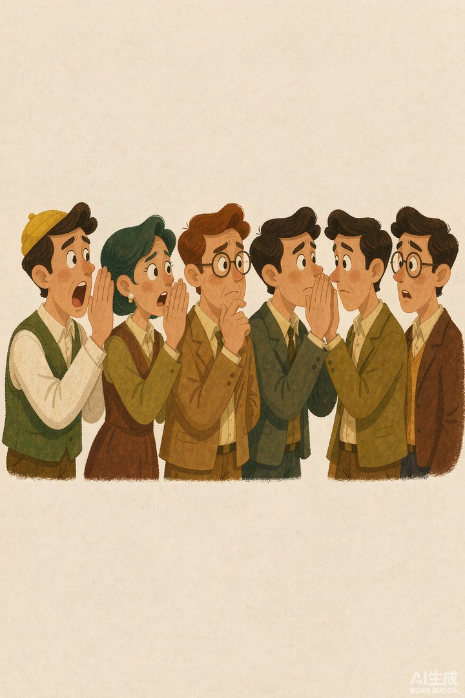
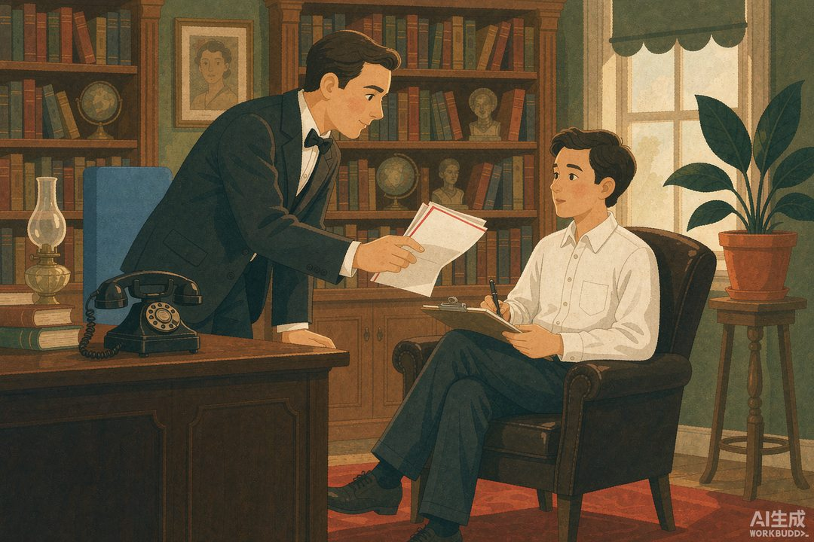
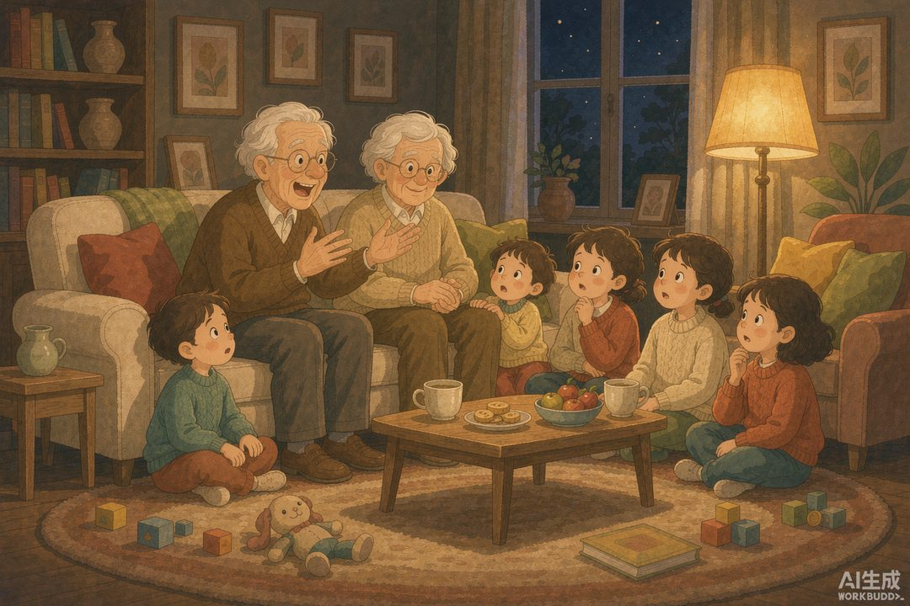

|
信息传播那些事儿 · 卷一 信息的黎明 · 第10篇 |
|
口述史的可怕误差：曾祖父怎么变成大英雄 —— 没有副本的世界里，传三代就能造出一个「英雄」 |
|
上回我们说，在没有文字的年代，人类靠"人肉硬盘"——游吟诗人、讲故事的老人——把信息一代代传下来。听起来挺浪漫。但浪漫背后有个扎心的事实：这套系统每传一遍，都偷偷改一点。今天这篇，我们就来算算这笔"失真账"到底有多大。 |
你可能以为"失真"是个现代病——有了朋友圈、有了热搜才有的事。
错。早在 1932 年，一位英国心理学家就叫一群剑桥学生玩了一把"传话游戏"，然后冷冷地记下了答案。那个实验，几乎把今天这篇的标题提前写好了。
一 | 一个 1932 年的实验，提前把答案给了你 |
心理学家叫弗雷德里克·巴特利特（Frederic Bartlett）。他找来一群英国学生，给他们读了一篇北美原住民的民间传说，名字很瘆人，叫《幽灵战争》（The War of the Ghosts）。
然后他玩了个花活：让第一个人把故事写下来，第二个人读第一个人的版本、再写自己的，第三个人读第二个人的……就这么一路传下去。这玩法你熟——就是小时候玩的"传话游戏"（telephone game）。巴特利特自己都说，这方法"就像那个叫 telephone 或 rumor 的游戏"。
结果呢？传到后面，故事跟原版几乎没啥关系了。
原文大概 330 个词。传了几轮之后，变成约 180 个词——整整瘦掉快一半。而且瘦掉的不是废话，是"不符合听众世界观"的那些关键细节。

▲ 一条消息经过十张嘴，还能剩多少？（AI 生成示意图）
二 | 失真三道工序：省略、同化、合理化 |
巴特利特把"走样"拆成了三道工序，看完你会觉得，记忆这玩意儿简直是个自带美颜滤镜的编译器。
第一道：省略（omission）。 故事里那些诡异、不舒服、跟自己 culture 不搭的细节，直接删。比如原文里的"鬼"——这故事名叫《幽灵战争》，鬼本是主角——传着传着，鬼没了。还有"嘴里吐出黑乎乎的东西""临死的人脸扭曲"，统统被砍掉。听的人潜意识觉得"这啥玩意儿，不合理"，手一抖就不记了。
第二道：同化（assimilation）。 记不住的陌生词，自动换成自己熟悉的。独木舟变成普通小船，划桨变成划船，捕海豹变成钓鱼，灵力造成的伤口变成普通刀伤。一句话：用你脑子里已有的模板，把陌生的东西"翻译"成本地货。
第三道：合理化（rationalization）。 故事原本跳跃、荒诞、没逻辑，听的人受不了，主动往里塞"所以""因为"，把东一块西一块的情节焊成一条通顺的因果链。于是原版那种"jerky（突兀）"的味道被磨平，变成一个"正常故事"。
三道工序下来，巴特利特得出一句名言：回忆不是重播，是"根据脑补重画"。 我们记下的，从来不是事件本身，而是"事件该有的样子"。

▲ 1932 年，巴特利特的"串流回忆"实验（AI 生成示意图）
|
数字锚点 · 一条消息经过几张嘴，会发生什么 | |||||||
巴特利特（Bartlett, 1932）《记忆》（Remembering）"串流回忆"实验：误差不是随机噪声，而是沿着"删陌生、套熟悉、补逻辑"的方向系统性漂移。 |
三 | 放到家族里：曾祖父变英雄 |
实验归实验，你可能会说：那是英国人记陌生传说，跟我家的故事有啥关系？
关系大了。我们看一个真实例子。
2002 年，一本社会学著作叫《爷爷不是纳粹》（Grandpa Wasn't a Nazi）出版。它研究德国家庭怎么回忆二战——结果发现一个普遍现象：很多家庭口述里，祖辈被洗白成"完全没沾过纳粹"，甚至被塑造成英雄、拯救者、或者纯粹的受害者。
这不是德国特产。把镜头拉回我们自己：一个普通老兵，打过仗、吃过苦，活着回来了。他跟孙子讲当初多险，讲着讲着，细节就升级了——敌人更多了、仗打得更漂亮了、自己的作用更关键了。传到重孙那一辈，曾祖父已经成了"一个人堵住机枪眼"的大英雄。
中国社科院的左玉河研究员说得透：口述记忆本质上是"事实与想象的混合体"。人讲故事，永远带着动机——自我表功型、辩诬白谤型。一位从战场下来的老兵，客观上是打了一场败仗，他讲出来的，却是自己英勇奋战、大获全胜的版本。这不是他故意撒谎，是记忆自己就长成了他"想记住的样子"。

▲ 爷爷眉飞色舞，孙子信以为真（AI 生成示意图）
四 | 没有副本 = 无法校验 = 谣言温床 |
上篇我们夸过口述传统的"冗余"——一百个诗人有一百种唱法，主干反而焊得死死的。可你换个角度看，冗余的另一面是致命的：
没有"原版"可以对照，错的也错得理直气壮。
手抄本抄错了，好歹还能找别的抄本对一对；口述呢？曾祖父到底干没干那件事，除了爷爷的嘴，没有第二来源。当一家人、一个族群都"这么说"的时候，虚构就被投票成了真相。
这就引出本篇真正要点的那一句——
在口述传统里，信息第一服务对象，是讲述者自己。它服务于讲述者的尊严、家族的面子、族群的立场。一个家族口述，讲的从来不是"客观曾祖父"，而是"我们家想让后代记住的那个曾祖父"。
而一旦这种"被集体相信的失真"跑出家族、跑进公共领域，它就不再叫"家史"，它叫——
谣言。 而且是最难治的那种：大家都信。
为什么谣言偏偏"坏事传千里"，比好事跑得还快？下一篇，我们专门拆它的"传播系数"。
|
下篇预告 · 第11篇《谣言的诞生》——口述会失真，但失真不一定变坏。可为什么偏偏"坏事传千里"，坏消息比好消息跑得快得多？下一篇拆开谣言的"传播系数"，看看进化为什么偏爱负能量。 |
|
本篇史实与数据转引自巴特利特（Bartlett, 1932）《记忆》（Remembering）"串流回忆"实验、左玉河《历史记忆、历史叙述与口述历史的真实性》及相关公开研究；配图为 AI 生成示意图。 |